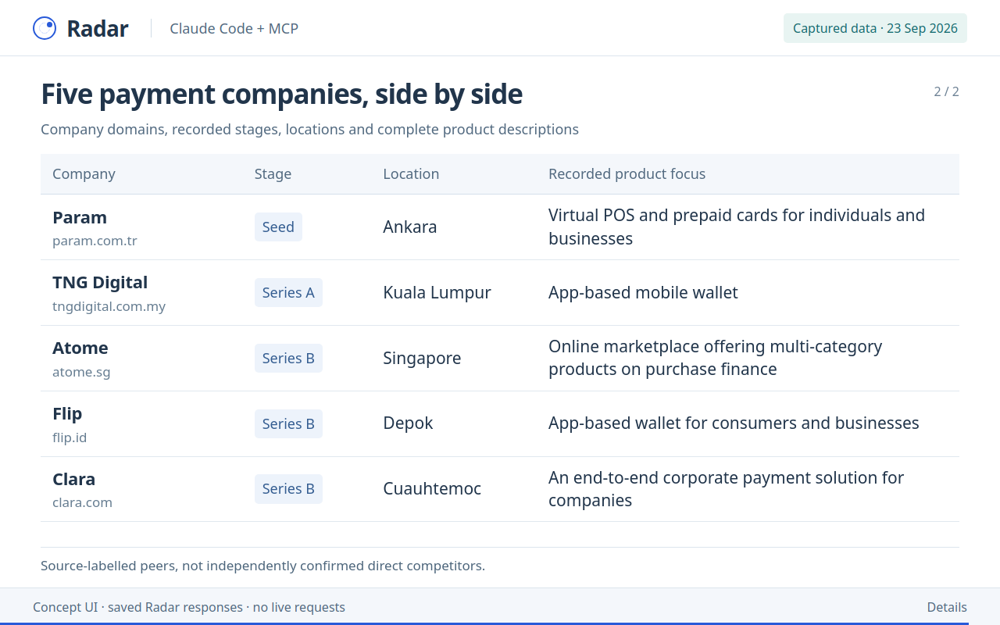

See what a connected
research assistant can build.
Write a brief in Claude Code or Codex. Radar supplies focused company, financial, people and app data; your client can turn it into a useful view.



Try this research brief
What you would see
Read the API workflowInspect the tool recipe
These are UI concepts, not recordings of the official Claude Code or Codex interfaces. Each GIF opens with a large typed prompt, slides the search box away and presents a full-screen chart followed by detailed results. The tool recipes are available beneath the player. They do not make API calls, connect an account or prove current source availability.
Captured-data demos cite saved Radar responses. Purple labels identify fictional cohorts, amounts, rankings or synthetic contacts. April 2026 means the stated publication window; newer company records do not prove historical headquarters. Spreadsheet writing happens in the client, after permitted contact reads.